Testing
PRIMARY FOCUS- Manual Testing
- Functional & Regression Testing
- Test Case Design
- Bug Reporting
- API Testing
- Mobile Testing
- Exploratory Testing
- Test Documentation
Manual QA Tester | Functional Testing | API & Mobile Testing
I focus primarily on manual testing of web and Android applications, as well as REST APIs. I design test cases, perform functional, exploratory and regression testing, identify defects and prepare clear bug reports with reproducible steps. I also have practical experience with test automation using Python, pytest, Playwright and Appium.
I never stop working until I achieve the result I’m looking for.
MANUAL QA | API & MOBILE TESTING | TEST AUTOMATION
I’m a freelance QA Tester focused primarily on manual software testing and quality assurance. I have practical experience testing web and Android applications, as well as REST APIs. I create test cases, perform functional, exploratory and regression testing, identify defects and prepare clear, reproducible bug reports.
I have completed testing projects across different platforms, including uTest, and developed practical QA documentation covering test scenarios, test cases, execution results and defect reports.
Alongside manual testing, I have experience with test automation using Playwright, Python, pytest and Appium. I also work with API testing using Postman and SQL, and use Git and GitHub to manage and document my projects.
My goal is to deliver reliable testing results through a structured approach, attention to detail and a strong understanding of software quality.
Primary focus: Manual QA. API and mobile testing are additional areas of practice, supported by test automation skills demonstrated in selected projects.
Hands-on testing work covering manual QA, APIs, web and mobile automation, and performance testing.
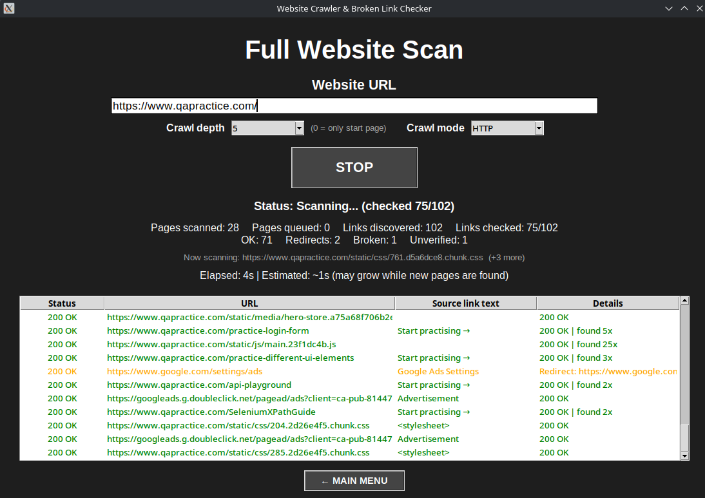
A desktop tool that crawls websites, checks discovered links, identifies broken URLs and redirects, measures response times, and exports scan results to Excel.
View project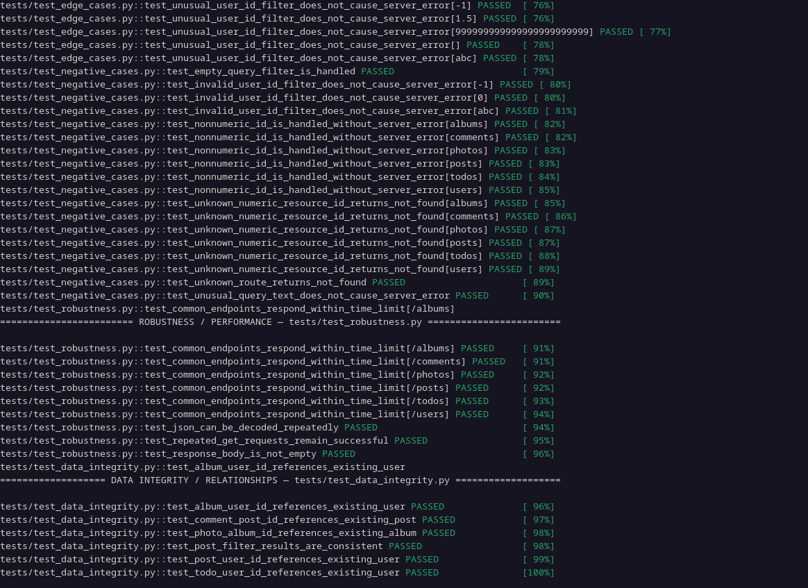
A pytest and Requests framework for API response validation, JSON Schema checks, positive and negative scenarios, boundary cases, and data-integrity testing across related resources.
View project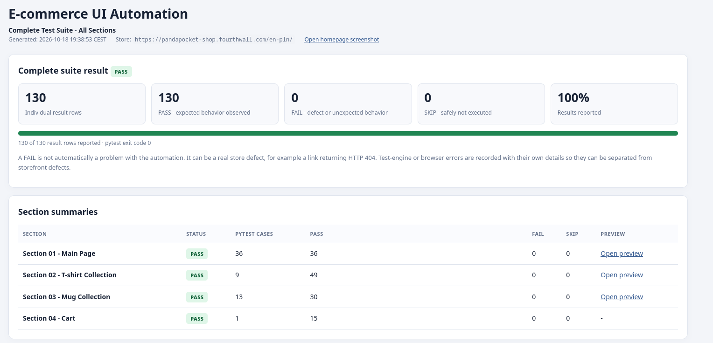
A Playwright and pytest suite for a Fourthwall storefront. It covers navigation, product options, currency selection, collections, shopping-cart operations, and checkout navigation without placing an order.
View project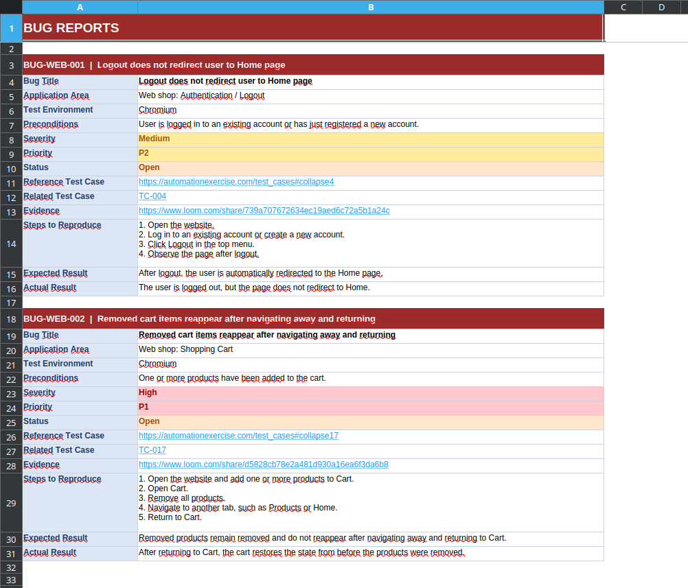
Structured manual testing documentation covering a web game, website and API workflows, and the LocalLock Android app, with reproducible test cases and documented defects.
View project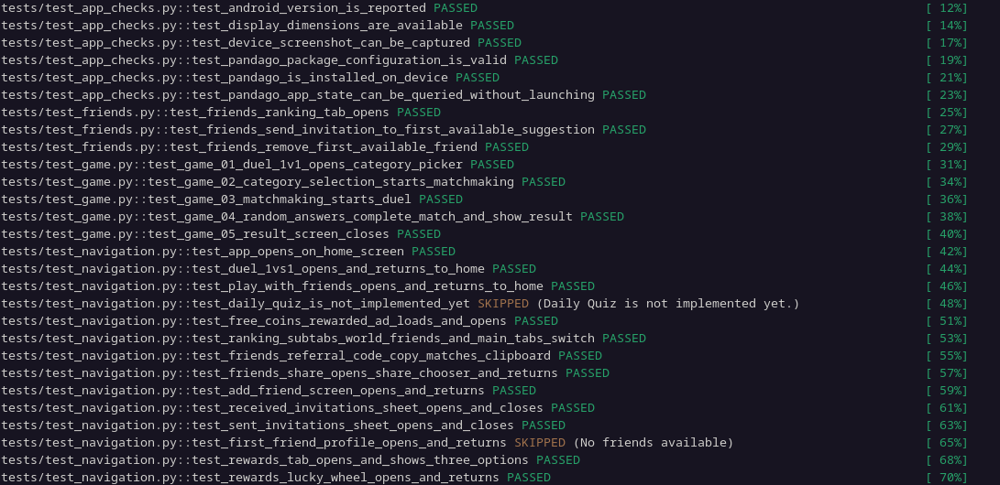
A mobile testing project combining manual test cases, documented API/backend scenarios, and Appium automation for app navigation, quiz flows, friends, rewards, and profile settings.
View project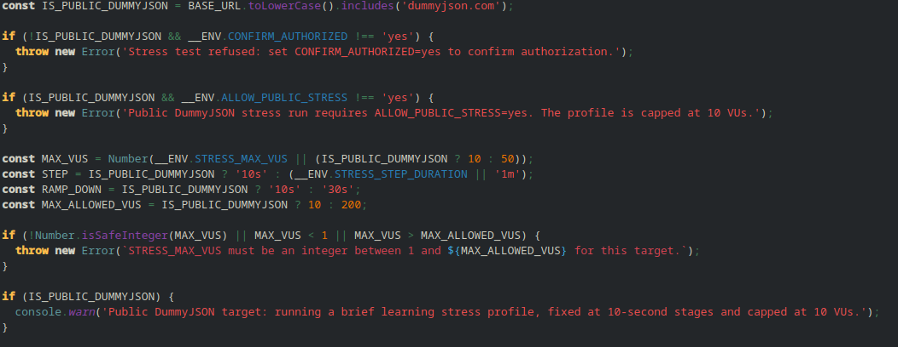
Performance testing scenarios for public API endpoints, covering smoke, load, and stress profiles with response checks, thresholds, and p90/p95 result analysis.
View projectAndroid apps and app concepts across learning, privacy, and mobile utility use cases.
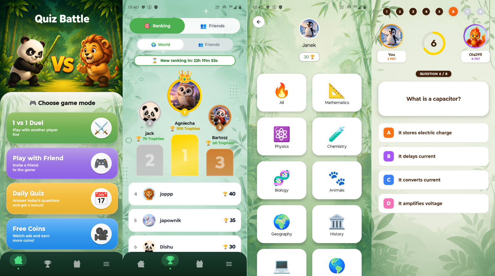
An Android quiz app built around learning and real-time competition. Players can join 1-vs-1 duels, play with friends, complete daily quizzes, climb rankings, and earn rewards.
View on Google Play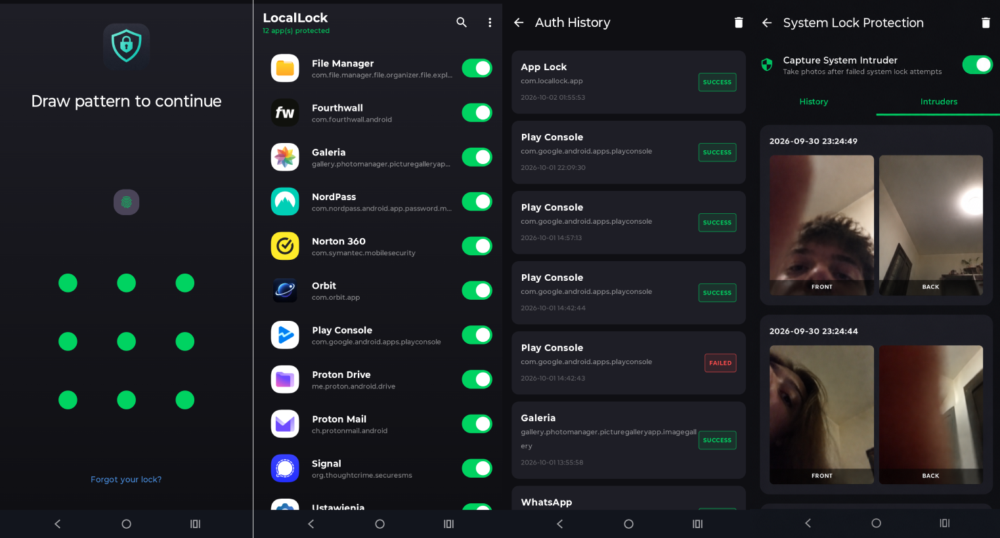
An offline-first Android privacy app that protects selected applications with PIN, password, pattern, or biometric authentication. It records failed unlock attempts and can capture intruder photos.
View on Google Play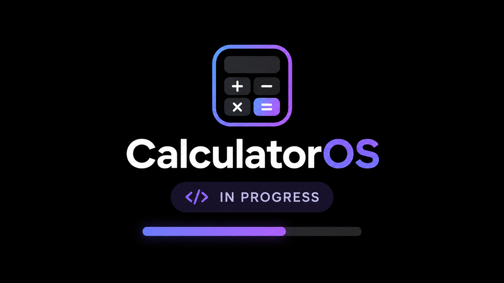
An Android app concept in development that explores a private space for selected apps behind a calculator-style interface with PIN protection.
Currently in developmentAcademic and portfolio work across building services, environmental engineering, renewable energy, solar thermal systems, and climatology.
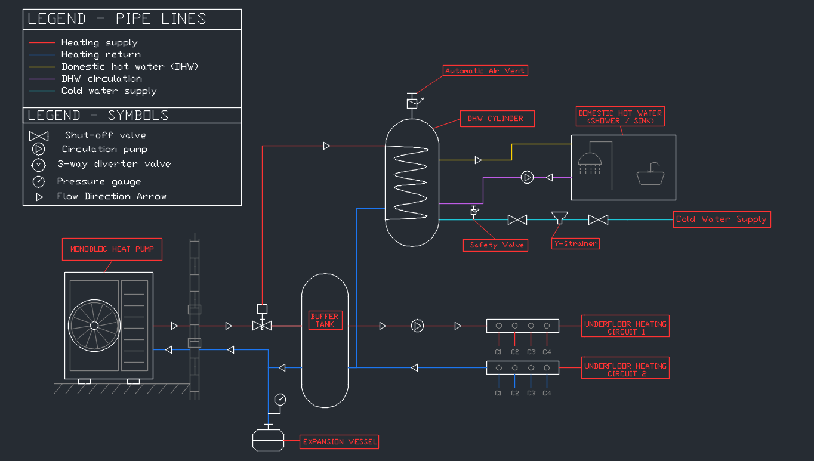
Three 2D schematics comparing residential heating and domestic hot-water solutions: split air-to-water heat pump, monobloc heat pump, and gas condensing boiler.
View project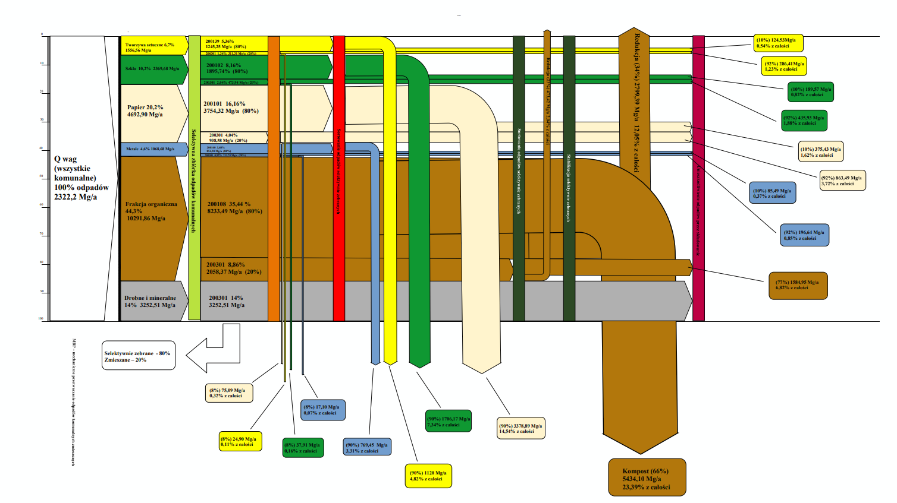
An engineering study combining waste composition analysis, mass-flow and Sankey diagrams, preliminary aerobic reactor sizing, landfill forecasting, and technical CAD drawings.
View project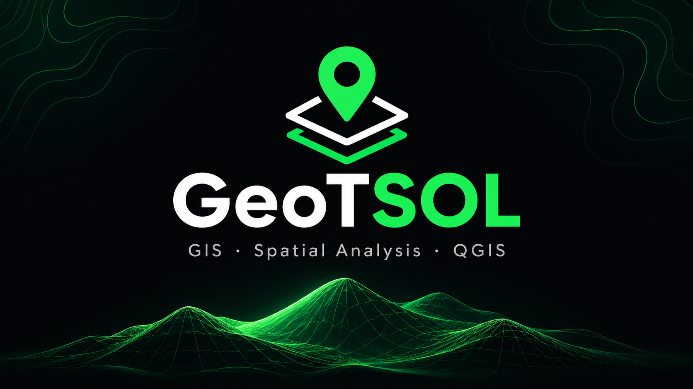
A comparative simulation study of residential air-to-water heat pump systems, using four household and location scenarios to review energy demand, system performance, and environmental indicators.
View project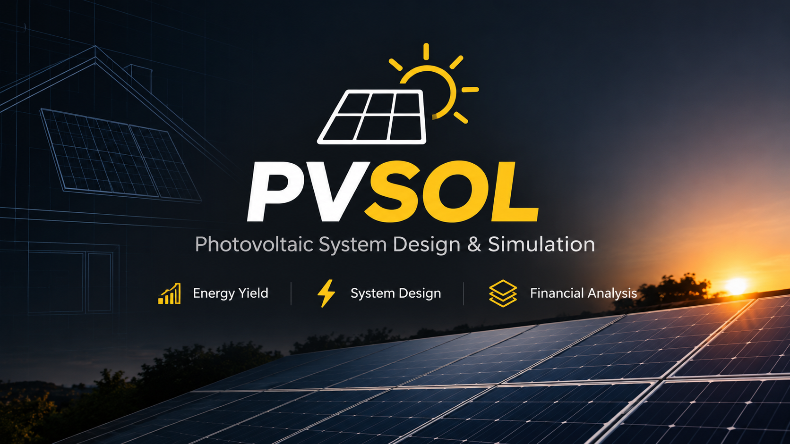
A four-scenario residential PV study covering module and inverter selection, roof layout, annual energy yield, self-consumption, grid exports, and financial indicators.
View projectA solar thermal system study using T*SOL to model system configurations, assess solar energy contribution to hot-water and space-heating demand, and review performance and cost indicators.
View project repository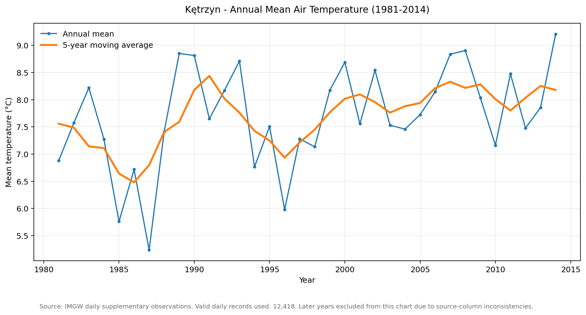
An analysis of annual mean air temperature in Kętrzyn based on quality-checked IMGW daily observations, using yearly averages and a five-year moving average to examine temperature variability and longer-term patterns.
View project repositoryWorkflow automation and market monitoring projects designed to reduce repetitive manual work.
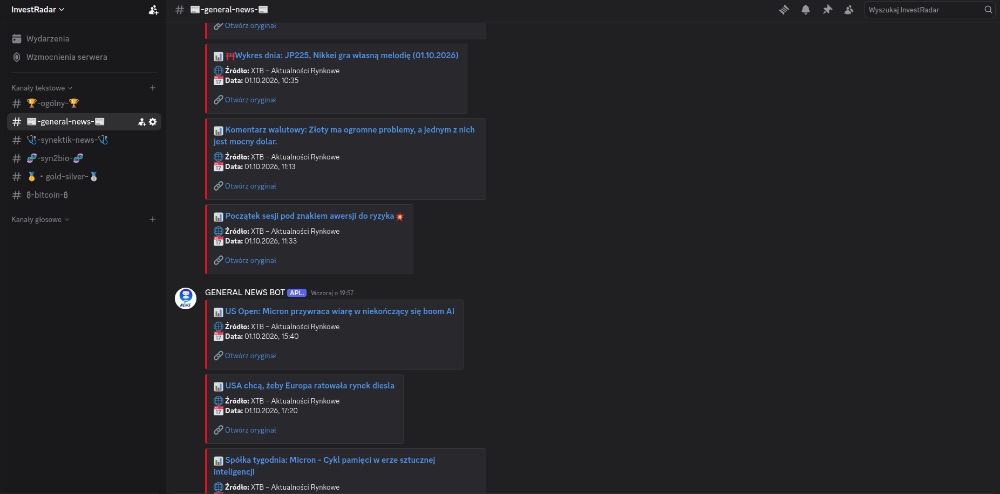
A Python monitoring tool that collects selected financial news and market data, filters previously seen items, and sends new updates to Discord. GitHub Actions supports scheduled and manual runs.
View project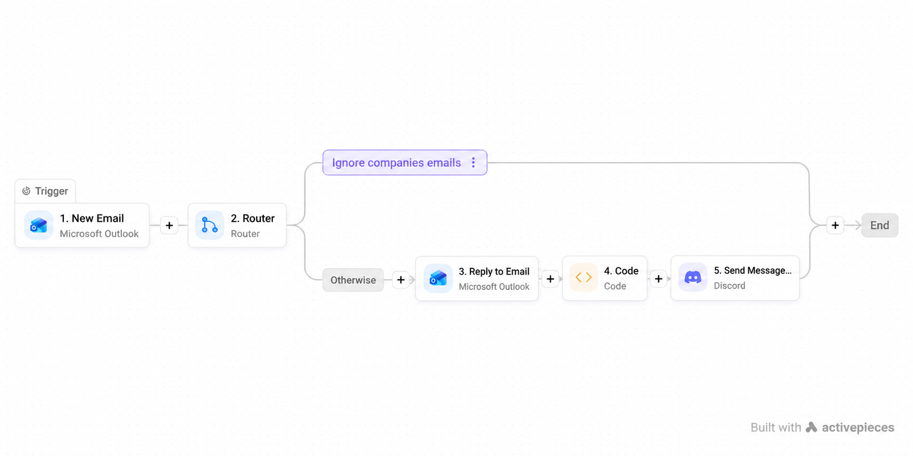
A workflow concept for sorting incoming Outlook messages, filtering selected system emails, sending acknowledgements when appropriate, and notifying a Discord channel.
View workflow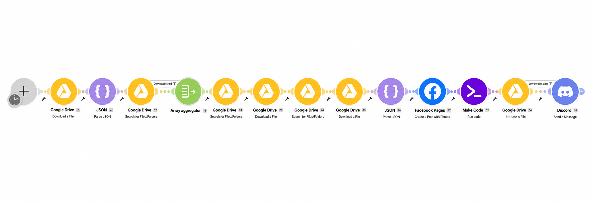
A scheduled publishing workflow designed to use images and captions stored in Google Drive, publish prepared posts to a Facebook Page, and notify when the unpublished queue is running low.
View workflow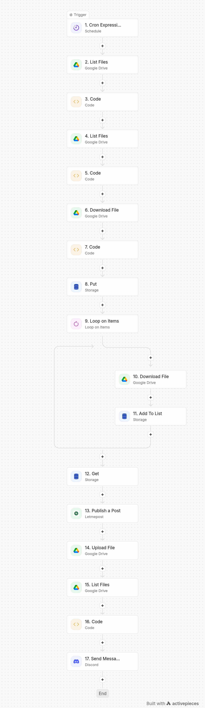
A content workflow designed to prepare TikTok posts from organized Google Drive folders and pass images and post details to a publishing integration, with Discord notifications.
View workflow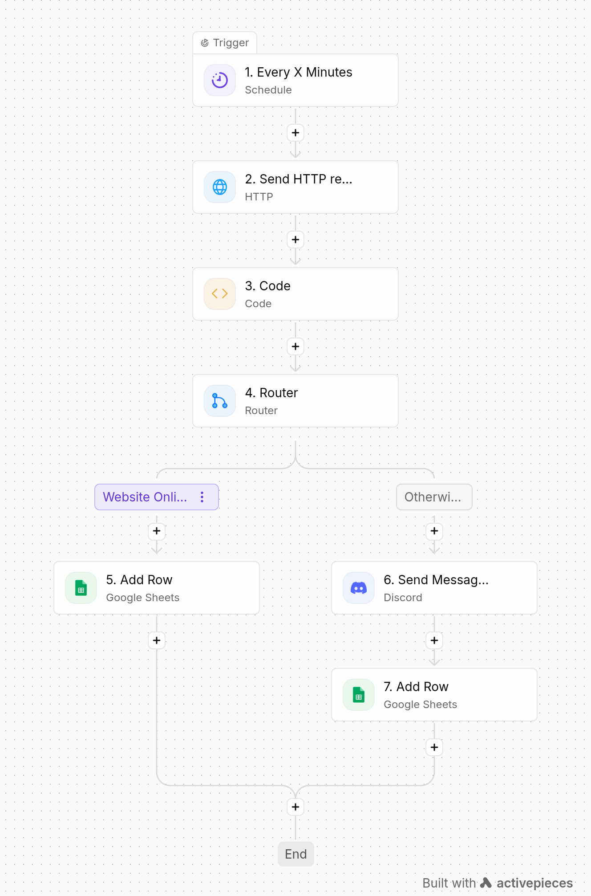
A scheduled website-checking workflow designed to record availability history in Google Sheets and send a Discord alert when a check indicates a potential availability problem.
View workflowQA results shown on cards refer to saved test runs and may vary when tests are repeated. Engineering entries are educational portfolio studies, not construction documentation. The four workflow automation entries are documented concepts with screenshots; the repository does not include full exports or connected live accounts.
Manual web and mobile testing · Test case execution · Bug identification and reporting · Crowdtesting projects
Sales and customer-facing work within the energy industry.
QA and test automation portfolio · Android app development (Pandago and LocalLock) · Python tools and workflow automation · Engineering studies
Selected certificates and course credentials covering QA, API testing, software engineering, programming and data.
Browse certificate files on GitHubSoftware engineering assessments and programming credentials.
HackerRank · Role-based software engineering assessment
HackerRank · Software engineering intern assessment
Cisco Networking Academy · Two-part Python programming course
HackerRank · Core Python language concepts
Credentials most directly related to software testing and QA workflows.
Postman · API testing concepts, requests and practical workflows
HackerRank · Intermediate REST API assessment
SoftwareTestPilot · Test design and defect documentation
SoftwareTestPilot · Browser automation fundamentals
SoftwareTestPilot · Agile practices and Jira fundamentals
SoftwareTestPilot · Version control and collaboration basics
Intermediate SQL and foundational data science knowledge.
HackerRank · Intermediate SQL queries and data retrieval
Cisco Networking Academy · Data science fundamentals with Python
Credentials are grouped by subject area. The original certificate files are available in the linked GitHub folder.
Planned future academic direction · Computer Science / IT
University of Rzeszów · Engineering degree programme
High school education · Mathematics and Computer Science
I'm open to QA opportunities, collaboration and interesting testing projects.